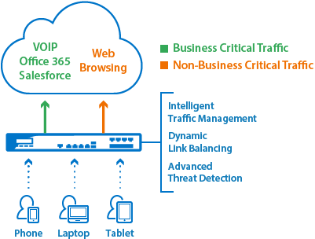

NEWS
What is next-generation firewall?
A next-generation firewall (NGFW)
is a part of the third generation of firewall technology, combining a traditional firewall with other network device filtering functions, such as an application firewall using in-line deep packet inspection (DPI), an intrusion prevention system (IPS). Other techniques might also be employed, such as TLS/SSL encrypted traffic inspection, website filtering, QoS/bandwidth management, antivirus inspection and third-party identity management integration (i.e. LDAP, RADIUS, Active Directory).
Next-generation firewall vs. traditional firewall
NGFWs include the typical functions of traditional firewalls such as packet filtering, network- and port-address translation (NAT), stateful inspection, and virtual private network (VPN) support. The goal of next-generation firewalls is to include more layers of the OSI model, improving filtering of network traffic that is dependent on the packet contents. NGFWs perform deeper inspection compared to stateful inspection performed by the first- and second-generation firewalls. NGFWs use a more thorough inspection style, checking packet payloads and matching signatures for harmful activities such as exploitable attacks and malware.
Evolution of next-generation firewalls
Improved detection of encrypted applications and intrusion prevention service. Modern threats like web-based malware attacks, targeted attacks, application-layer attacks, and more have had a significantly n egative effect on the threat landscape. In fact, more than 80% of all new malware and intrusion attempts are exploiting weaknesses in applications, as opposed to weaknesses in networking components and services. Stateful firewalls with simple packet filtering capabilities were efficient blocking unwanted applications as most applications met the port-protocol expectations. Administrators could promptly prevent an unsafe application from being accessed by users by blocking the associated ports and protocols. But blocking a web application that uses port 80 by closing the port would also mean complications with the entire HTTP protocol. Protection based on ports, protocols, IP addresses is no more reliable and viable. This has led to the development of identity-based security approach, which takes organizations a step ahead of conventional security appliances which bind security to IP-addresses. NGFWs offer administrators a deeper awareness of and control over individual applications, along with deeper inspection capabilities by the firewall. Administrators can create very granular " allow/deny" rules for controlling use of websites and applications in the network.
Source:https://en.wikipedia.org/wiki/Next-generation_firewall